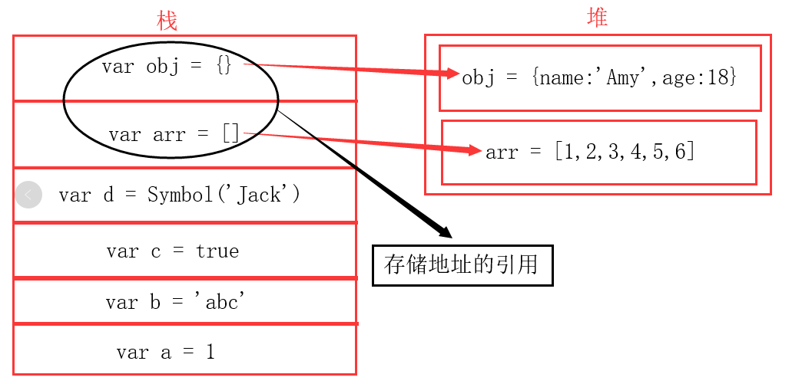

JavaScritp的数据类型大致分为2种：基本数据类型和引用数据类型。
其中：
（1）基本数据类型：Number、String、Boolean、Null、Undefined、Symbol以及未来ES10新增的BigInt(任意精度整数)
（2）对象 (引用类型)：Object、Array、Function、Date、RegExp
其次，我们再来简单了解下 堆和栈
堆是动态分配内存，内存大小不一，也不会自动释放。堆内存存放的是引用类型数据，存放的是指向该对象指针。其缺点是存取速度较慢。
栈是自动分配相对固定大小的内存空间，并由系统自动释放。栈内存主要存放的是基本数据类型和对象的引用，如果存放的是引用类型，则存储的是对象的内存地址引用。其优势是存取速度比堆要快，并且栈内的数据可以共享，但缺点是存在栈中的数据大小与生存期必须是确定的，缺乏灵活性。
当我们访问引用数据时，先从栈内存中获取指针，通过指针在堆内存中找到数据

好了，步入正题，深拷贝与浅拷贝。
浅拷贝：复制了第一层属性，在复制基本类型时，直接使用等号完成；（基本类型数据不受浅拷贝影响）
在复制引用类型时，循环遍历对象，对每个属性或值使用等号完成。
（浅拷贝只是复制了对象的引用地址，两个对象指向同一个内存地址，所以修改其中任意的值，另一个对象的值都会随之改变）
深拷贝：将对象及值复制过来，两个对象修改其中任意的值另一个值不会改变。
<------------------- 浅拷贝 ------------------->
浅拷贝可以使用 for in 、Object.assign、扩展运算符 ... 、Array.prototype.slice()、Array.prototype.concat() 等
for in、Object.assign、扩展运算符 ... ：
let obj = {name:'Jack', age:18, hobbies:['reading','motion']};
let obj1 = {};
let obj2 = Object.assign({},obj);
let obj3 = {...obj};
for(let key in obj){
obj1[key] = obj[key]
}
obj.name = 'Amy';
obj.hobbies.push('singing');
console.log(obj); // {name:'Amy', age:18, hobbies:['reading','motion','singing']}
console.log(obj1); // {name:'Jack', age:18, hobbies:['reading','motion','singing']}
console.log(obj2); // {name:'Jack', age:18, hobbies:['reading','motion','singing']}
console.log(obj3); // {name:'Jack', age:18, hobbies:['reading','motion','singing']}Array.prototype.slice()、Array.prototype.concat()：
let arr = [['西瓜','甘蔗','樱桃'], 'Orange', 'Banana', 'Apple', 'Mango'];
let arr1 = arr.slice();
let arr2 = [].concat(arr);
arr[1] = '橙子';
arr[0][1] = 'grape';
console.log(arr); //[['西瓜','grape','樱桃'], '橙子', 'Banana', 'Apple', 'Mango']
console.log(arr1); //[['西瓜','grape','樱桃'], 'Orange', 'Banana', 'Apple', 'Mango']
console.log(arr2); //[['西瓜','grape','樱桃'], 'Orange', 'Banana', 'Apple', 'Mango']
可以看出浅拷贝只最第一层属性进行了拷贝，当第一层的属性值是基本数据类型时，新的对象和原对象互不影响，
但是如果第一层的属性值是复杂数据类型，那么新对象和原对象的属性值其指向的是同一块内存地址。
<------------------- 深拷贝 ------------------->
深拷贝最简单的实现是: JSON.parse(JSON.stringify(obj))
let obj1 = [0,1,[2,3],4];
let obj2 = JSON.parse(JSON.stringify(obj1));
obj2[2][0] = 10;
console.log(obj1); //[0,1,[2,3],4];
console.log(obj2); //[0,1,[10,3],4];
let obj3 = {name:'Jack',sex:'男',age:29,child:{'name':'Amy',age:5}};
let obj4 = JSON.parse(JSON.stringify(obj3));
obj4.child.name = 'Lily';
console.log(obj3); //{name:'Jack',sex:'男',age:29,child:{'name':'Amy',age:5}}
console.log(obj4); //{name:'Jack',sex:'男',age:29,child:{'name':'Lily',age:5}}但是有一些缺陷：
1.对象的属性值是函数时，无法拷贝。
let fun1 = function(){
console.log(1);
};
console.log(fun1); //ƒ(){console.log(1);} let fun2 = JSON.parse(JSON.stringify(fun1));
console.log(fun2); // 报错：Uncaught SyntaxErro2.原型链上的属性无法拷贝
function Person(){
this.name = 'Jack';
}
Person.prototype.age = 27;
let p1 = new Person();
console.log(p1); // Person {name: "Jack"},__proto__:{age: 27}
console.log(p1.age); // 27
let p2 = JSON.parse(JSON.stringify(p1));
console.log(p2); // {name: "Jack"}
console.log(p2.age); // undefined3.不能正确的处理 Date 类型的数据
let date1 = new Date();
console.log(date1); // Tue Jul 23 2019 23:19:36 GMT+0800 (中国标准时间)
let date2 = JSON.parse(JSON.stringify(date1));
console.log(date2); // 2019-07-23T15:19:36.362Z4.不能处理 RegExp
let reg1 = new RegExp('test', 'g');
console.log(reg1); // /test/g
let reg2 = JSON.parse(JSON.stringify(reg1));
console.log(reg2); // {}5.会忽略 symbol
const symbol1 = Symbol('Json');
console.log(symbol1); // Symbol(Json) const symbol2 = JSON.parse(JSON.stringify(symbol1));
console.log(symbol2); //报错：Uncaught SyntaxErro6.会忽略 undefined
let un1 = {name:'jason',age:27,sex:undefined};
console.log(un1); //{name: "jason", age: 27, sex: undefined}
let un2 = JSON.parse(JSON.stringify(un1));
console.log(un2); //{name: "jason", age: 27}
实现一个 deepClone 函数
// 1.如果是基本数据类型，直接返回
// 2.如果是 RegExp 或者 Date 类型，返回对应类型
// 3.如果是复杂数据类型，递归。
// 4.考虑循环引用的问题
function deepClone(obj,hash = new WeakMap()){
if(obj instanceof RegExp){
return new RegExp(obj);
}
if(obj instanceof Date){
return new Date(obj);
}
//如果不是复杂数据类型，直接返回
if(obj === null || typeof obj !== 'object'){
return obj;
}
// 缓存,如果hash WeakMap()实例关联了obj
// 直接返回key关联对象的值。避免重复循环;
if(hash.has(obj)){
return hash.get(obj);
}
// 如果obj是数组,那obj.constructor 是 ƒ Array() { [native code] }
// 如果obj是对象,那obj.constructor 是 ƒ Object() { [native code] }
let t = new obj.constructor();
//在WeakMap中设置一组key关联对象，返回这个 WeakMap对象。
hash.set(obj,t);
for(let key in obj){
// 递归
// 是否是自身属性
if(obj.hasOwnProperty(key)){
// obj = [0,1,[2,3],4];
// 索引不为2时，obj[key]值为基本类型,直接返回obj[key]值
// 索引为2时，obj[key]=[2,3]，是复杂数据类型，
// 递归执行deepClone(obj,hash = new WeakMap());
t[key] = deepClone(obj[key],hash);
}
}
return t;
} // Function
let fun3 = function(){
console.log(1);
};
console.log(fun3); //ƒ(){console.log(1);}
let fun4 = deepClone(fun3,hash = new WeakMap());
console.log(fun4); //ƒ(){console.log(1);}
// 原型链
function Person(){
this.name = 'Jack';
}
Person.prototype.age = 27;
let p3 = new Person();
console.log(p3); // Person {name: "Jack"},__proto__:{age: 27}
console.log(p3.age); // 27
let p4 = deepClone(p3,hash = new WeakMap());
console.log(p4); // Person {name: "Jack"},__proto__:{age: 27}
console.log(p4.age); // 27
console.log(p3 === p4); //false
// Date
let date3 = new Date();
console.log(date3); //Tue Jul 23 2019 23:19:36 GMT+0800 (中国标准时间) let date4 = deepClone(date3,hash = new WeakMap());
console.log(date4); //Tue Jul 23 2019 23:19:36 GMT+0800 (中国标准时间) console.log(date3 === date4); //false // RegExp
let reg3 = new RegExp('test', 'g');
console.log(reg3); // /test/g
let reg4 = deepClone(reg3,hash = new WeakMap());
console.log(reg4); // /test/g
console.log(reg3 === reg4); //false;
// Symbol
const symbol3 = Symbol('Json');
console.log(symbol3); // Symbol(Json)
const symbol4 = deepClone(symbol3,hash = new WeakMap());
console.log(symbol4); // Symbol(Json)
console.log(symbol3 === symbol4); //true Symbol是基本数据类型
// undefined
let un3 = {name:'jason',age:27,sex:undefined};
console.log(un3); //{name: "jason", age: 27, sex: undefined}
let un4 = deepClone(un3,hash = new WeakMap());
console.log(un4); // {name: "jason", age: 27, sex: undefined}
console.log(un3 === un4); //false
// Object Array
let obj5 = { a: 1, b: 2 };
// 递归 遍历y时，直接走if语句 直接返回key关联对象的值,或者 undefined(没有key关联对象时)。
let obj6 = { x: obj5, y: obj5 };
let obj7 = deepClone(obj6,hash = new WeakMap());
obj7.x.a = 1000;
console.log(obj6.x); //{a: 1, b: 2}
console.log(obj6.y); //{a: 1, b: 2}
console.log(obj7.x === obj7.y); //true;
console.log(obj7.x); //{a: 1000, b: 2}
console.log(obj7.y); //{a: 1000, b: 2}
console.log(obj6 === obj7); //false如有错误或者不足还望指正，谢谢！！！